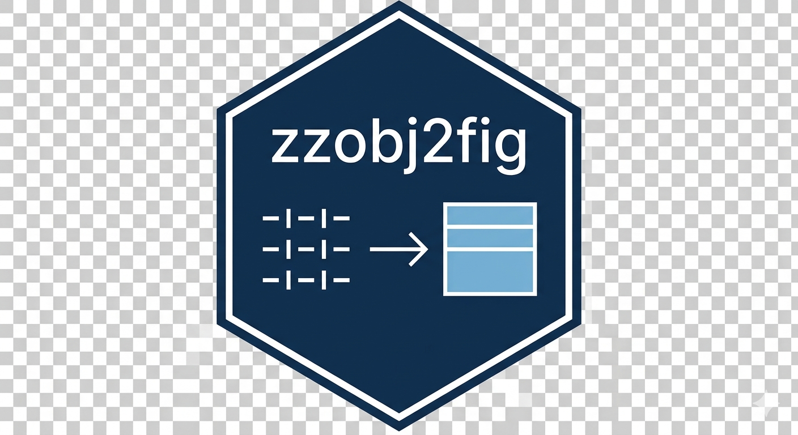

Working with Different Object Types and Themes
Ronald G. Thomas
Source:vignettes/object-types-and-themes.Rmd
object-types-and-themes.Rmdzzobj2fig v0.2.0 introduced S3 method dispatch for
o2f(), enabling direct conversion of statistical objects to
publication-quality tables. This vignette demonstrates how different R
object types are handled and how themes affect table appearance.
Object Types
Data Frames
Data frames are the most common input type. The
o2f.data.frame() method handles standard data frame objects
with full formatting support.
df <- data.frame(
Variable = c("Age", "Weight", "Height"),
Mean = c(45.2, 72.5, 168.3),
SD = c(12.1, 15.8, 9.2),
N = c(150, 148, 150)
)
o2f(df, filename = "descriptive_stats", sub_dir = output_dir,
caption = "Descriptive Statistics")Data frames from dplyr pipelines work seamlessly:
library(dplyr)
summary_table <- mtcars |>
group_by(cyl) |>
summarise(
N = n(),
`Mean MPG` = round(mean(mpg), 1),
`SD MPG` = round(sd(mpg), 1),
`Mean HP` = round(mean(hp), 0),
.groups = "drop"
)
o2f(summary_table,
filename = "cylinder_summary",
caption = "Vehicle Statistics by Cylinder Count",
sub_dir = output_dir)Matrices
Matrices are converted to data frames with optional row names as the
first column via the o2f.matrix() method.
Contingency Tables
Base R table objects are supported directly via the
o2f.table() method.
Linear Models
The o2f.lm() method extracts coefficient tables from
linear model objects. Control which statistics appear using the
include parameter.
model <- lm(mpg ~ cyl + hp + wt, data = mtcars)
o2f(model,
filename = "regression_table",
caption = "Multiple Regression: MPG Predictors",
include = c("estimate", "std.error", "p.value"),
digits = 3,
sub_dir = output_dir)Add confidence intervals (code only - full statistics):
Generalized Linear Models
The o2f.glm() method supports logistic, Poisson, and
other GLM families. Use exponentiate = TRUE to display odds
ratios or rate ratios.
logit_model <- glm(am ~ mpg + hp + wt,
data = mtcars,
family = binomial)
o2f(logit_model,
filename = "logistic_odds_ratios",
caption = "Logistic Regression: Odds Ratios",
exponentiate = TRUE,
include = c("estimate", "conf.int", "p.value"),
sub_dir = output_dir)
#> Waiting for profiling to be done...
#> Warning: glm.fit: fitted probabilities numerically 0 or 1 occurred
#> Warning: glm.fit: fitted probabilities numerically 0 or 1 occurred
#> Warning: glm.fit: fitted probabilities numerically 0 or 1 occurred
#> Warning: glm.fit: fitted probabilities numerically 0 or 1 occurred
#> Warning: glm.fit: fitted probabilities numerically 0 or 1 occurred
#> Warning: glm.fit: fitted probabilities numerically 0 or 1 occurred
#> Warning: glm.fit: fitted probabilities numerically 0 or 1 occurred
#> Warning: glm.fit: fitted probabilities numerically 0 or 1 occurred
#> Warning: glm.fit: fitted probabilities numerically 0 or 1 occurred
#> Warning: glm.fit: fitted probabilities numerically 0 or 1 occurred
#> Warning: glm.fit: fitted probabilities numerically 0 or 1 occurred
#> Warning: glm.fit: fitted probabilities numerically 0 or 1 occurred
#> Warning: glm.fit: fitted probabilities numerically 0 or 1 occurred
#> Warning: glm.fit: fitted probabilities numerically 0 or 1 occurred
#> Warning: glm.fit: fitted probabilities numerically 0 or 1 occurred
#> Warning: glm.fit: fitted probabilities numerically 0 or 1 occurred
#> Warning: glm.fit: fitted probabilities numerically 0 or 1 occurred
#> Warning: glm.fit: fitted probabilities numerically 0 or 1 occurred
#> Warning: glm.fit: fitted probabilities numerically 0 or 1 occurred
#> Warning: glm.fit: fitted probabilities numerically 0 or 1 occurred
#> Warning: glm.fit: fitted probabilities numerically 0 or 1 occurred
#> Warning: glm.fit: fitted probabilities numerically 0 or 1 occurred
#> Warning: glm.fit: fitted probabilities numerically 0 or 1 occurred
#> Warning: glm.fit: fitted probabilities numerically 0 or 1 occurred
#> Warning: glm.fit: fitted probabilities numerically 0 or 1 occurred
#> Warning: glm.fit: fitted probabilities numerically 0 or 1 occurred
#> Warning: glm.fit: fitted probabilities numerically 0 or 1 occurred
#> Warning: glm.fit: fitted probabilities numerically 0 or 1 occurred
#> Warning: glm.fit: fitted probabilities numerically 0 or 1 occurred
#> Warning: glm.fit: fitted probabilities numerically 0 or 1 occurred
#> Warning: glm.fit: fitted probabilities numerically 0 or 1 occurred
#> Warning: glm.fit: fitted probabilities numerically 0 or 1 occurred
#> Warning: glm.fit: fitted probabilities numerically 0 or 1 occurred
#> Warning: glm.fit: fitted probabilities numerically 0 or 1 occurredANOVA Tables
Both aov and anova objects are supported
via o2f.aov() and o2f.anova().
Hypothesis Tests
The o2f.htest() method handles output from t-tests,
chi-square tests, and other hypothesis testing functions.
Regression Model Comparisons
The o2f_regression() function creates side-by-side model
comparison tables with significance stars.
m1 <- lm(mpg ~ wt, data = mtcars)
m2 <- lm(mpg ~ wt + hp, data = mtcars)
m3 <- lm(mpg ~ wt + hp + cyl, data = mtcars)
o2f_regression(
`(1)` = m1,
`(2)` = m2,
`(3)` = m3,
stars = TRUE,
digits = 3,
filename = "model_progression",
sub_dir = output_dir
)RMS Package Models (v0.2.1)
zzobj2fig v0.2.1 adds full support for Frank Harrell’s rms (Regression Modeling Strategies) package, commonly used in biostatistics and clinical trials.
rms Model Types
library(rms)
dd <- datadist(mtcars)
options(datadist = "dd")
ols_model <- ols(mpg ~ rcs(wt, 4) + cyl, data = mtcars)
o2f(ols_model, filename = "ols_results")
o2f(ols_model, output = "anova", filename = "ols_chunk_tests")
lrm_model <- lrm(am ~ mpg + wt, data = mtcars)
o2f(lrm_model, exponentiate = TRUE, filename = "logistic_or")
library(survival)
dd <- datadist(lung)
options(datadist = "dd")
cph_model <- cph(Surv(time, status) ~ age + sex, data = lung)
o2f(cph_model, exponentiate = TRUE, filename = "cox_hr")rms Model Comparison
m1 <- ols(mpg ~ wt, data = mtcars)
m2 <- ols(mpg ~ wt + cyl, data = mtcars)
m3 <- ols(mpg ~ wt + cyl + hp, data = mtcars)
o2f_rms_compare(Simple = m1, Moderate = m2, Full = m3,
filename = "model_comparison")Complete List of rms Methods
| Object Class | Method | Key Parameters |
|---|---|---|
ols |
o2f.ols() |
output (coef/anova) |
lrm |
o2f.lrm() |
exponentiate, output
|
cph |
o2f.cph() |
exponentiate, output
|
orm |
o2f.orm() |
exponentiate, intercepts
|
Glm |
o2f.Glm() |
exponentiate, output
|
psm |
o2f.psm() |
output |
Note: The output = "anova" option
produces ANOVA-style chunk tests, which is particularly useful for
models with spline terms (e.g., rcs()).
Additional Object Types via broom
zzobj2fig supports additional statistical object types through broom
integration. These methods use broom::tidy() to extract
model information, then format the results.
Survival Analysis (survival package)
library(survival)
cox_model <- coxph(Surv(time, status) ~ age + sex, data = lung)
o2f(cox_model, exponentiate = TRUE, filename = "cox_hr")
survreg_model <- survreg(Surv(time, status) ~ age + sex, data = lung)
o2f(survreg_model, filename = "parametric_survival")
km_fit <- survfit(Surv(time, status) ~ sex, data = lung)
o2f(km_fit, filename = "kaplan_meier")Complete List of broom-Based Methods
| Object Class | Package | Method | Key Parameters |
|---|---|---|---|
coxph |
survival | o2f.coxph() |
exponentiate, conf.int
|
survreg |
survival | o2f.survreg() |
digits |
survfit |
survival | o2f.survfit() |
times |
survdiff |
survival | o2f.survdiff() |
digits |
Arima |
stats | o2f.Arima() |
digits |
nls |
stats | o2f.nls() |
conf.int |
polr |
MASS | o2f.polr() |
exponentiate, conf.int
|
multinom |
nnet | o2f.multinom() |
exponentiate, conf.int
|
prcomp |
stats | o2f.prcomp() |
matrix (rotation/summary) |
kmeans |
stats | o2f.kmeans() |
matrix (centers/summary) |
lmerMod |
lme4 | o2f.lmerMod() |
effects, conf.int
|
glmerMod |
lme4 | o2f.glmerMod() |
effects, exponentiate
|
lme |
nlme | o2f.lme() |
effects |
Note: These methods require the broom
package (or broom.mixed for lme4/nlme models) and the
respective model packages to be installed.
Extensibility via o2f_tidy()
For any object type supported by broom::tidy() but
without a dedicated zzobj2fig method, use o2f_tidy():
library(randomForest)
rf <- randomForest(Species ~ ., data = iris)
o2f_tidy(rf, filename = "rf_importance")
library(mgcv)
gam_model <- gam(mpg ~ s(wt) + s(hp), data = mtcars)
o2f_tidy(gam_model, filename = "gam_results")This provides a fallback for the 50+ object types supported by broom that don’t have dedicated zzobj2fig methods.
Theme Demonstrations
Each built-in theme provides distinct styling appropriate for different publication contexts. Below are side-by-side comparisons using the same data.
demo_data <- mtcars[1:6, c("mpg", "cyl", "hp", "wt")]Default Theme
The default styling uses blue row shading with booktabs rules.
o2f(demo_data,
filename = "theme_default",
caption = "Default Theme",
sub_dir = output_dir)NEJM Theme
The New England Journal of Medicine theme provides clean, professional medical journal styling with light yellow shading and sans-serif fonts.
o2f(demo_data,
filename = "theme_nejm",
caption = "NEJM Theme",
theme = "nejm",
sub_dir = output_dir)NEJM theme characteristics:
- Light yellow alternating row colors
- Sans-serif font (Helvetica)
- Booktabs horizontal rules
- Compact column spacing (4pt)
- Footnotesize font
APA Theme
The American Psychological Association theme follows APA 7th edition table guidelines.
o2f(demo_data,
filename = "theme_apa",
caption = "APA Theme",
theme = "apa",
sub_dir = output_dir)APA theme characteristics:
- No row shading
- Times Roman font
- Letter paper with 1-inch margins
- Booktabs rules
Nature Theme
The Nature journal theme uses Helvetica with subtle gray shading.
o2f(demo_data,
filename = "theme_nature",
caption = "Nature Theme",
theme = "nature",
sub_dir = output_dir)Nature theme characteristics:
- Light gray row shading (gray!8)
- Sans-serif font (Helvetica)
- Small font size
- 15mm margins
Minimal Theme
The minimal theme provides clean, unobtrusive styling suitable for general use.
o2f(demo_data,
filename = "theme_minimal",
caption = "Minimal Theme",
theme = "minimal",
sub_dir = output_dir)Custom Themes
Create custom themes for specific requirements using
o2f_theme().
presentation_theme <- o2f_theme(
name = "presentation",
scolor = "blue!15",
header_bold = TRUE,
font_size = "large",
striped = TRUE,
extra_packages = list(
geometry(margin = "10mm"),
"\\renewcommand{\\arraystretch}{1.3}"
)
)
o2f(demo_data,
filename = "theme_presentation",
caption = "Custom Presentation Theme",
theme = presentation_theme,
sub_dir = output_dir)Global Theme Setting
Set a theme globally for consistent styling across multiple tables in an analysis.
o2f_theme_set("nejm")
o2f(mtcars[1:5, 1:4], filename = "table1", sub_dir = "output")
o2f(iris[1:5, ], filename = "table2", sub_dir = "output")
model <- lm(mpg ~ wt + hp, data = mtcars)
o2f(model, filename = "table3", sub_dir = "output")
o2f(mtcars[1:5, 1:4],
filename = "table4_apa",
theme = "apa",
sub_dir = "output")
o2f_theme_set(NULL)Summary
Object Type Support (Base Methods)
| Object Class | Method | Key Parameters |
|---|---|---|
data.frame |
o2f.data.frame() |
Standard o2f parameters |
matrix |
o2f.matrix() |
rownames |
table |
o2f.table() |
Standard o2f parameters |
lm |
o2f.lm() |
digits, include,
conf.level
|
glm |
o2f.glm() |
digits, include,
exponentiate, conf.level
|
aov |
o2f.aov() |
digits |
anova |
o2f.anova() |
digits |
htest |
o2f.htest() |
digits |
Object Type Support (rms package)
| Object Class | Method | Key Parameters |
|---|---|---|
ols |
o2f.ols() |
output (coef/anova) |
lrm |
o2f.lrm() |
exponentiate, output
|
cph |
o2f.cph() |
exponentiate, output
|
orm |
o2f.orm() |
exponentiate, intercepts,
output
|
Glm |
o2f.Glm() |
exponentiate, output
|
psm |
o2f.psm() |
output |
Object Type Support (via broom)
| Object Class | Package | Key Parameters |
|---|---|---|
coxph, survreg,
survfit, survdiff
|
survival | exponentiate |
nls |
stats | conf.int |
polr, multinom
|
MASS, nnet | exponentiate |
prcomp, kmeans
|
stats | matrix |
lmerMod, glmerMod
|
lme4 | effects |
lme |
nlme | effects |
Arima |
stats | digits |
| Any broom object | o2f_tidy() |
tidy_args, glance
|
Theme Comparison
| Theme | Row Shading | Font | Use Case |
|---|---|---|---|
| Default | blue!10 | Serif | General purpose |
| NEJM | yellow!8 | Helvetica | Medical journals |
| APA | None | Times | Psychology/social sciences |
| Nature | gray!8 | Helvetica | Scientific journals |
| Minimal | gray!5 | Serif | Clean, simple tables |
Theme Functions
| Function | Purpose |
|---|---|
o2f_theme() |
Create custom theme |
o2f_theme_set() |
Set global theme |
o2f_theme_get() |
Get current global theme |
o2f_theme_nejm() |
NEJM preset |
o2f_theme_apa() |
APA preset |
o2f_theme_nature() |
Nature preset |
o2f_theme_minimal() |
Minimal preset |
o2f_list_themes() |
List available themes |